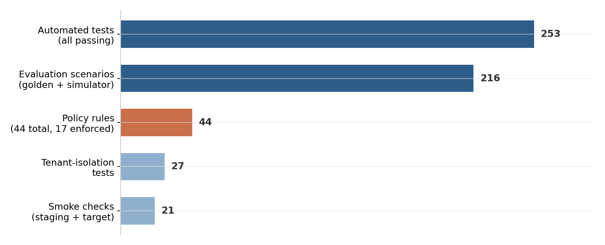
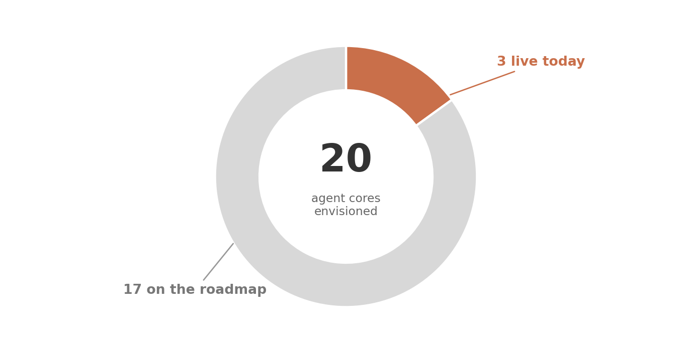

Selling a home is a chain of high-stakes decisions — pricing, positioning, offers, conditions, deadlines. Northstar SellerOS is an operating system that lets software agents do the heavy lifting on that chain, while a licensed human keeps both hands on the wheel.
It is built specifically for Canadian real estate: bilingual from the ground up (English and fr-CA), Ontario-first in its rules, and consent-first in its data. It is not a chatbot bolted onto a spreadsheet — it is a governed workspace where autonomous cores prepare the work and people approve the moves.
Builds a living dossier: facts, evidence, comparables, and a defensible valuation narrative.
Proposes pricing and positioning, with the reasoning attached — not just a number.
Extracts the terms that matter and lines offers up side by side, so trade-offs are visible at a glance.
Turns an accepted offer into a tracked task plan — deadlines, conditions, and owners, all in one place.
Every meaningful action follows the same guarded path. This is the whole trick, and it takes one diagram:
Whether an action sails through, waits for a signature, or gets stopped — all three endings are recorded in the same tamper-evident trail.
If consent has expired, the send simply does not happen — the system blocks it and writes down why. That behaviour is part of the demo, not a promise slide.
One approval, one use. Two people clicking at the same moment still produce exactly one decision.
Tenants can't see or touch each other's data — enforced in the data layer and covered by dedicated tests.
Anyone can demo a confident prototype. So the pilot was held to a simple standard: if it can't be executed, it doesn't get claimed. A few numbers from the verification battery:

Behind those bars sit a few deliberate engineering choices: an append-only audit log where each entry is cryptographically chained to the one before it; an outbox that guarantees no message is ever sent twice, even across a crash and restart; and a rule that tests may never be loosened to make a result look green.
The vision is a fleet of twenty specialised agent cores. Today, three are live and demonstrable — and we say so plainly, because a pilot built on honesty scales better than one built on theatre.

Live integrations with external services (today they are safe mocks) · legal or regulatory certification · unsupervised autonomy · production readiness. When any of these change, it will be announced with evidence — the same standard this document is held to.
The pilot is designed for low bandwidth. No data migration, no integration project, no training programme — a supervised sandbox with fictional demo data.
A fully fictional brokerage is pre-loaded — listings, contacts, offers, the works. Explore freely; nothing is real and nothing can leak.
Lead conversation → dossier → valuation → strategy → offers compared → transaction plan. Watch the approval desk and the blocked-message demo on the way.
The pilot's output is your verdict. What gets wired next is decided by what supervised users actually value.
Northstar SellerOS · Demo pilot · Supervised Ontario testing with fictional data · Human approval gates on every external action · Bilingual EN / fr-CA.